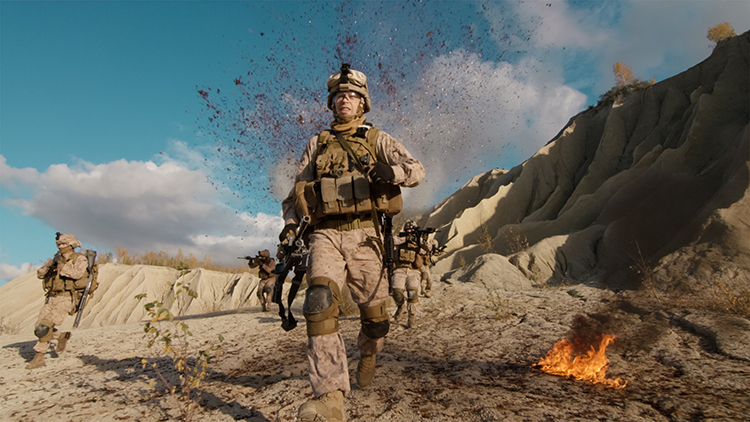

PTSD
While post-traumatic stress disorder (PTSD) is not exclusive to the military and can affect anyone who has experienced any type of trauma, veterans experience a higher rate of PTSD than the general population.[1] Yet, veterans often seek help less frequently because they don’t want to be seen as weak or be treated differently. Additionally, some military leaders also believe that the term "disorder" makes suffering service members averse to seeking help, and they've tried to have it renamed post-traumatic stress injury, which would help reduce the stigma associated with "disorder."
If you'd like more information click this link USA Vets for Each Other.

Depression
Depression Due to a Physical Service-Connected Condition It is not unusual for a veteran to develop depression as the result of a physical condition. When a veteran has a physical disability resulting from service that has been found to be service-connected, it is possible to apply for an increase in disability compensation for the depression.
If you'd like more information click this link Compensation for Depression.
Abandonment/ Helplessness
The phrase is common in military circles; staff officers who utter the word “hope” in a briefing are quickly dispatched back to the drawing room with a cutting use of the “hope is not a strategy” phrase. Yes, hope – standing alone, unmoored to any concrete action or contingency plans – is not a strategy.
If you'd like more information click this link warroom.armywarcollege.edu.

Addiction/ Alcholism
The trauma of combat, the physical pain of injuries, and the sense of disconnect in civilian life may lead many veterans to develop addiction. Many veterans are unwilling or unable to reach out for help due to a culture of toughness and a fear of discrimination, but treatment can provide veterans with hope and healing and it can help them begin working on their recovery.
If you'd like more information click this link Addiction Help.